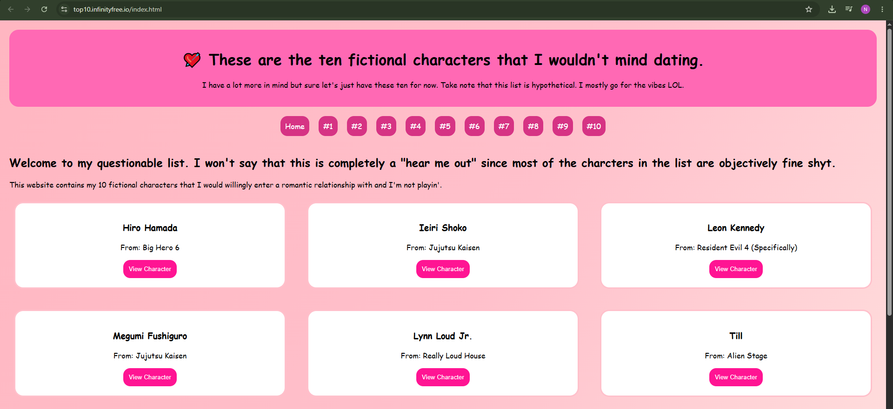
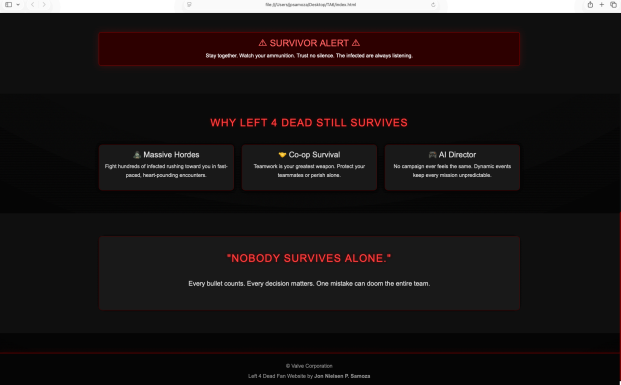
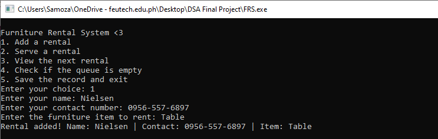

This is a website made for PC that allows users to view my professional website that discusses my top 10 fictional characters. HTML, CSS, and JavaScript are all utilized by this project.

This is a responsive type of website that is mainly focused around a popular first-person zombie shooting game called Left 4 Dead back in 2008. The website is all about that game, its story, its gameplays, and characters.

This project is currently still in progress. The program is all about furniture rental system in which users can input their information as well as their preferred product. The C++ program utilized abstract data types as well as structures algorithms like pointers, linked lists, queues, and a personal file-handling system.